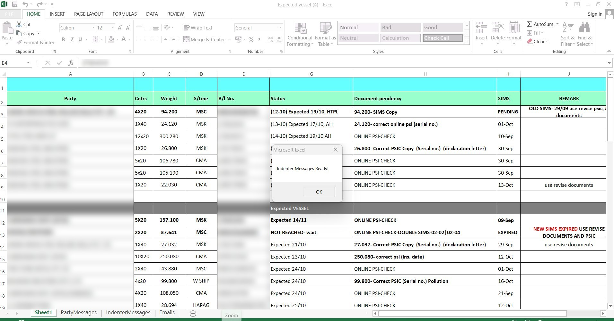

Logistics Communication Automation
Open the shipment sheet, press a button, and get every recipient's WhatsApp update and document-request email ready to copy — instead of typing them one by one for hours.

Why this needed to exist
The team sent daily shipment-status updates to many parties and indenters on WhatsApp, and emailed parties for pending documents before shipments arrived. Every message was prepared by hand: find the recipient, check the status and pending documents, group their shipments, write the text, and calculate how many days remained. By the client's estimate it took about 4–5 hours a day and left room for wrong statuses, wrong date counts and inconsistent wording.
What I built
I built an Excel VBA automation on top of the sheet the team already maintains. It reads the shipment rows, cleans party names, groups shipments by party and by indenter, applies the formatting and filtering rules, calculates the expected-arrival window, and writes ready-to-copy WhatsApp messages and email drafts into separate worksheets. The user reviews the output and sends it manually, so a human stays in control.
Before and after
Timings are the client's own estimate, not an independent benchmark. Generated text should still be reviewed before sending.
What it can do
WhatsApp generator — by party
Combines all of a party's shipments into one message with formatted document references and status text.
WhatsApp generator — by indenter
One message per indenter, including the related party information.
Email generator
Builds a pending-document email per qualifying shipment with the expected-arrival window worked out automatically.
Conditional templates
Different wording for documents-copy pending, shipment not yet reached, and general pending documents.
Built-in rules
Party-name cleaning, filtering of online-check records, date adjustments and a standard reminder line.
Output worksheets
Messages and emails land in dedicated sheets (PartyMessages, IndenterMessages, Emails) ready to copy.
What is built — and what is not
I like being clear about where a project actually stands, so you know exactly what you are looking at.
✅ Built & working
- Party-wise WhatsApp message generation
- Indenter-wise WhatsApp message generation
- Email draft generation with automatic day calculation
- Three rule-based email templates
- Dedicated output worksheets
- Macro buttons with completion confirmation
- Review-and-copy workflow
🚧 Not built yet
- Automatic sending of WhatsApp messages or emails — drafts are copied and sent manually
- Support for every date format — unrecognised status text uses a fallback value
- Standalone app outside Excel
- Direct integration with WhatsApp Business API or an email client
Real interfaces, not mockups
Use the numbers / arrows to move through the screenshots. Click the big image to open it full screen.
See it in action
Tech stack
What I learned
- Automating the tool people already use gets adopted faster than a new platform.
- Keeping a human review-and-send step makes automation safer for client communication.
- Date rules must be confirmed with the client before they are trusted.
Need something like Logistics Communication Automation?
Tell me about your process. I'll reply on WhatsApp with what I would automate and what the first version should include.